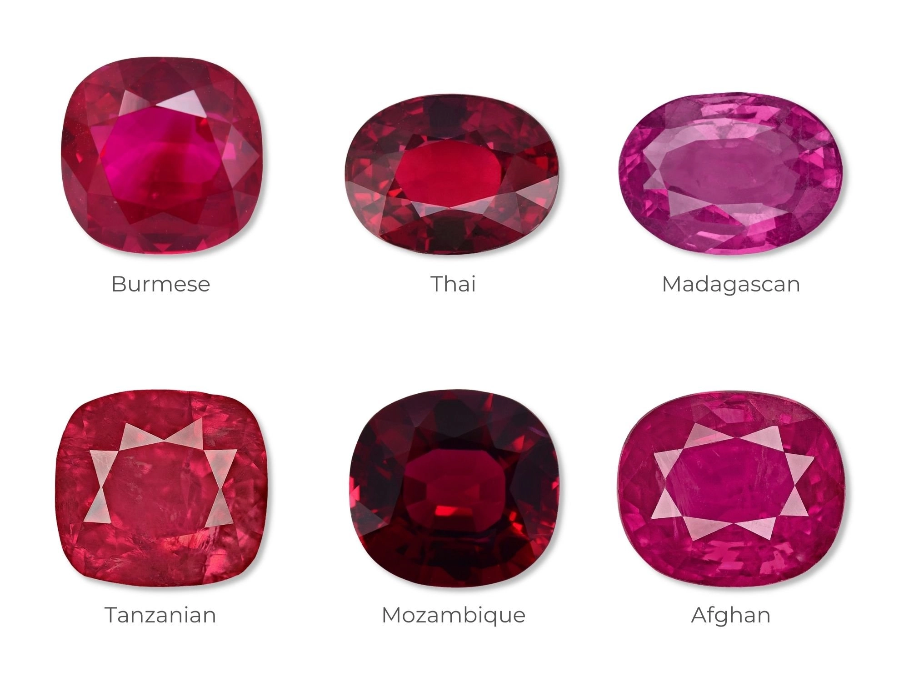

Les corindons
- Système cristalin : rhomboédrique
- Indice de réfraction : 1,759 à 1,778
- Birèfringence : uniaxe -0,008
- Densité : 4
- Dureté : 9
- Couleur : incolore violet bleu vert jaune rose rouge orange brun noir
- Particularité : Si la couleur est rouge alors c'est un rubis
si la couleur est bleue alors c'est un saphir
et toutes autres couleurs se dit saphir (suivuit de la couleur qui lui correspond)
- Image :
